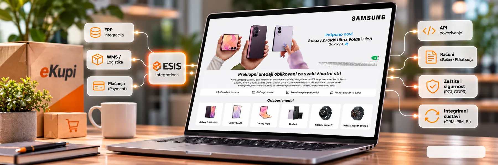

eSIS — Samsung & Miele integrations
Connecting brand inventory and campaign operations to an eCommerce platform.
eCommerceIntegrationsDelivery

01
The challenge
Brands needed more direct control over inventory-related information and selected campaign activities within a multi-brand commerce environment.
02
Why it mattered
Multi-brand commerce depends on practical data flows and appropriate administration permissions.
03
My role
- Coordinated eCommerce integration requirements
- Connected partner needs with frontend and backend changes
04
What I did
- Worked on integrating the eCommerce platform with external brand systems
- Supported administration enhancements for product lists and categories
- Aligned delivery between brand and eCommerce stakeholders
05
What came out of it
- Contributed to brand-system integrations enabling greater independence in selected inventory and campaign activities
06
My takeaway
Better partner experience often starts with better internal tools and data flows.
GOOD THINGS START WITH A CONVERSATIONHave a complex idea?
Have a complex idea?
Let’s make it work.
Open to senior Product, Delivery, eCommerce and Digital Transformation opportunities — where business, technology and people need to work together.